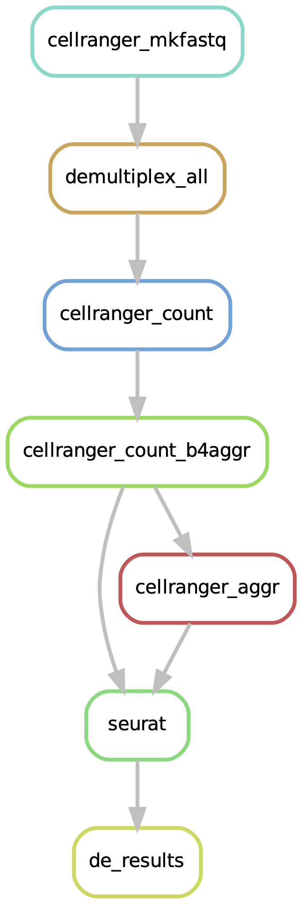

scRNA-seq snakemake pipeline manual
25-11-2024
1 Introduction:

The single-cell RNA pipeline can start from either bcl files with initial demultiplexing or already demultiplexed fastq files.
Based on the data format at the start
BCL files
Please prepare a csv file in one of the following formats:
[a] pipeline count: gene expression-only data
feature_type,run_bcl_path,iem_samplesheet,samplesheet_4_bcl,fastq_outdirectory,bcl_run_index
"Gene Expression",/path/bcl/folder1,False,/path/to/samplesheet/for/bcl/folder1,/path/to/fastq/output/dir1,run1
"Gene Expression",/path/bcl/folder2,True,/path/to/samplesheet/for/bcl/folder2,/path/to/fastq/output/dir2,run2[b] pipeline multi: gene expression and VD(J) data
feature_type,run_bcl_path,iem_samplesheet,samplesheet_4_bcl,fastq_outdirectory,bcl_run_index
"Gene Expression,/path/bcl/folder1,False,/path/to/samplesheet/for/bcl/folder1,/path/to/fastq/output/dir1,run1
"VDJ-B",/path/bcl/folder2,False,/path/to/samplesheet/for/bcl/folder2,/path/to/fastq/output/vdj_bcell,runbcell
"VDJ-T",/path/bcl/folder3,False,/path/to/samplesheet/for/bcl/folder3,/path/to/fastq/output/vdj_tcell,runtcell/path/to/samplesheet/for/bcl/folder1, the bcl samplesheet can either be a simple samplesheet (iem_samplesheet False)
or
an Illumina Experiment Manager file (iem_samplesheet True)
[Header],,,,,,,,
IEMFileVersion,4,,,,,,,
Investigator Name,rjr,,,,,,,
Experiment Name,hiseq_test,,,,,,,
Date,8/15/16,,,,,,,
Workflow,GenerateFASTQ,,,,,,,
Application,HiSeq FASTQ Only,,,,,,,
Assay,TruSeq HT,,,,,,,
Description,hiseq sample sheet,,,,,,,
Chemistry,Default,,,,,,,
,,,,,,,,
[Reads],,,,,,,,
26,,,,,,,,
98,,,,,,,,
,,,,,,,,
[Settings],,,,,,,,
,,,,,,,,
[Data],,,,,,,,
Lane,Sample_ID,Sample_Name,Sample_Plate,Sample_Well,I7_Index_ID,index,Sample_Project,Description
1,s1,test_sample,,,SI-P03-C9,SI-P03-C9,p1,🚨 Important!
Do not trim adapters during demultiplexing. Leave these settings blank.
Trimming adapters from reads can potentially damage the 10x barcodes and the UMIs, resulting in pipeline failure or data loss.
If you are using an Illumina sample sheet for demultiplexing with bcl2fastq, BCL Convert or our mkfastq pipeline,
please remove these lines under the [Settings] section: Adapter or AdapterRead1 or AdapterRead2.
FASTQ files
Please prepare csv file with the following format: